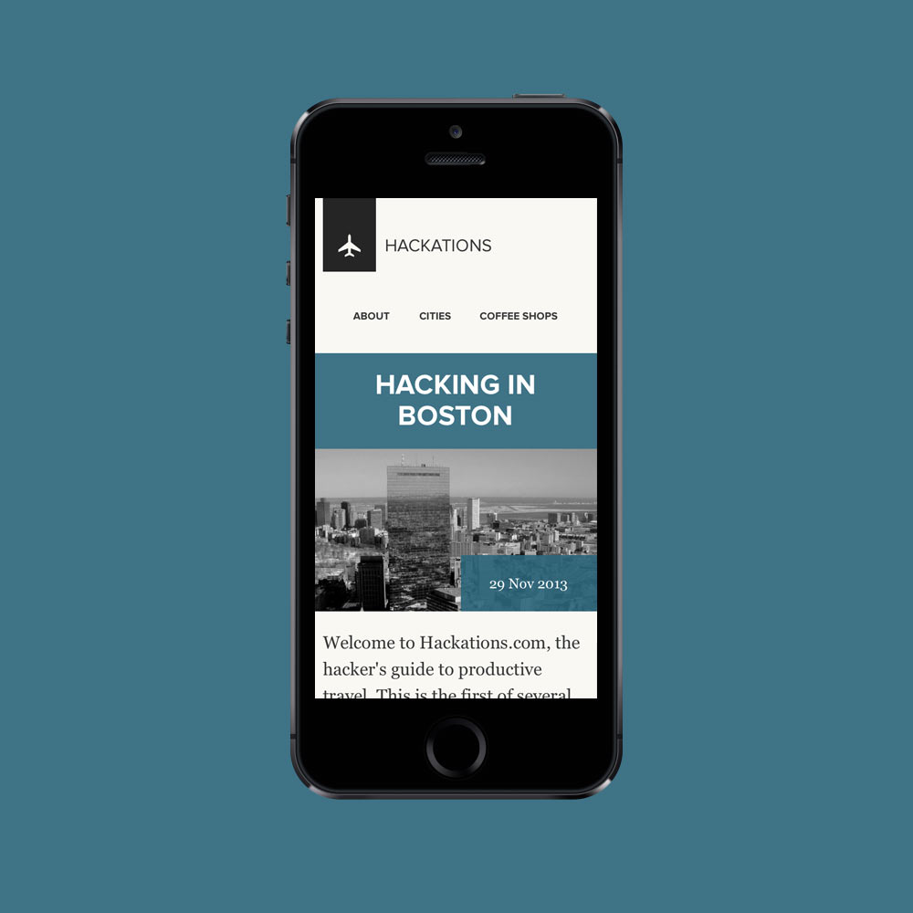

Hackations
I was asked by brace.io founder Cole Krumholz to help with the front-end design of Hackations. Due to today’s increasingly remote, information-centric workforce, and the prevalence of wifi in cities, working vacations are becoming a viable way to improve quality of life without sacrificing productivity.
